Metoda CENA
Algorytm neuro-ewolucyjny do wyznaczania Pareto-optymalnych klasyfikatorów.
Algorytm neuro-ewolucyjny do wyznaczania Pareto-optymalnych klasyfikatorów
Do wyznaczania reprezentacji Pareto-optymalnych klasyfikatorów skonstruowano neuro-ewolucyjny algorytm CENA (ang. Creditworthiness Evolutionary Neural Assessment) (rys. 1). Jako maksymalną liczbę warstw w sieciach neuronowych przyjęto 12.
Badanymi zestawami danych były German Credit Data [196], Give Me Some Credit [191] oraz Lending Club [192]. W eksperymentach wykorzystano uproszczoną wersję zestawu danych Lending Club pochodzącą z serwisu Kaggle [193]. Ze względu na konieczność powtórzenia eksperymentów wstępne przygotowanie danych wykonano za pomocą skryptów w języku R. Z zestawów danych German Credit Data, Give Me Some Credit oraz Lending Club wybrano 600, 2000 oraz 1000 obserwacji tak, aby w zbiorach były równe liczby obserwacji wiarygodnych i niewiarygodnych kredytowo.
W wyniku wielokrotnych eksperymentów na niewielkich instancjach testowych rekomenduje się, aby w początkowej fazie działania algorytmu CENA krzyżowaniu podlegało zazwyczaj 60% sieci w populacji. Jeżeli wartości funkcji przystosowania poprawiają się dla co najmniej 20% sieci powstałych w wyniku krzyżowania, to wartość współczynnika crossover rate zwiększa się o 10%. W przeciwnym przypadku zmniejsza się go o 10%. Natomiast mutacji podlega 80% sieci, które nie były krzyżowane.
Możliwych jest kilka rodzajów mutacji sieci neuronowej. Nowatorska mutacja polega na zamianie funkcji aktywacji w neuronie. Podstawową funkcją aktywacji jest sigmoidalna funkcja ze znakiem, jak niżej:
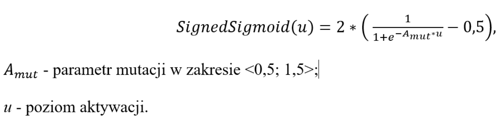
Ponadto rozważa się sigmoidalną funkcję aktywacji bez znaku:
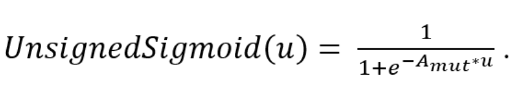
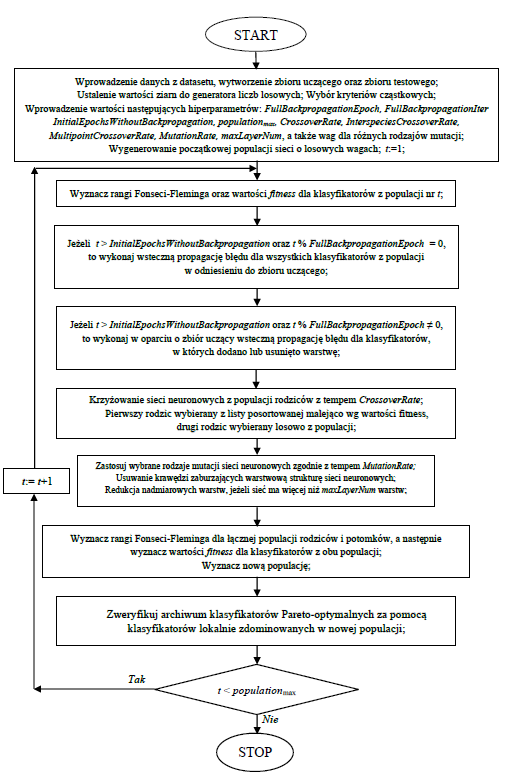
Kliknij rysunek, aby powiększyć.
Istotną funkcją aktywacji jest tangens hiperboliczny:
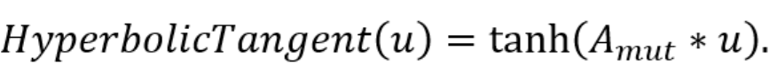
Ponadto mutacja może obejmować funkcję schodkową ze znakiem:
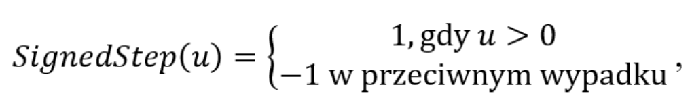
oraz funkcję schodkową bez znaku, jak niżej:
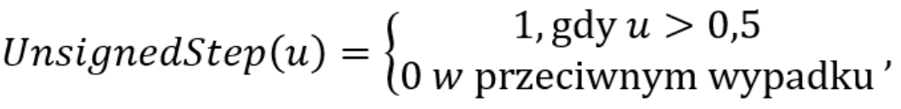
Funkcją aktywacji może być również funkcja ReLU:
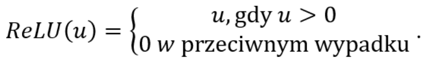
W algorytmie CENA zastosowano również mutację polegającą na dodaniu warstwy neuronów (rys. 2). Neurony nowej warstwy cechują się losowo wybraną funkcją aktywacji. Dodatkowo wybrane neurony nowej warstwy łączy się połączeniami synaptycznymi o losowej wadze z wybranymi neuronami warstwy poprzedzającej (pomarańczowe strzałki na rys. 2). Inny rodzaj mutacji polega na usuwaniu losowo wybranej warstwy neuronów ukrytych. Kolejny rodzaj mutacji umożliwia dodanie połączenia synaptycznego między dwoma neuronami z dwóch kolejnych warstw sieci. Dodanie lub usuwanie neuronu w warstwie to dodatkowe typy mutacji. Mutacjami są również operacje usuwania lub dodawania połączenia synaptycznego.
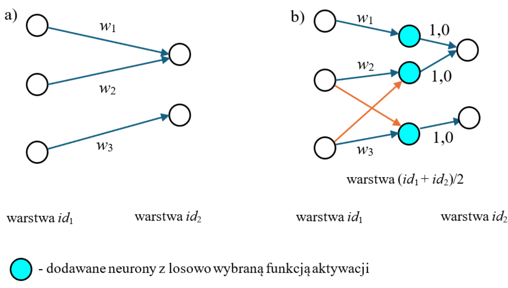
Sieci neuronowe w populacji są uczone za pomocą wstecznej propagacji błędu co trzydzieści generacji algorytmu ewolucyjnego. Jest to szczególny rodzaj mutacji. Rekomendowaną wartością tempa uczenia jest 0,01. Sieć wytworzona w wyniku wstecznej propagacji błędu zastępuje rodzica wtedy i tylko wtedy, gdy cechuje się wyższą wartością funkcji przystosowania. Ponadto za pomocą wstecznej propagacji błędów uczono sieci, które powstały przez dodanie lub usunięcie warstwy neuronowej.
W eksperymentach wielokryterialnych decydent wybiera kryteria cząstkowe, np. trafność, F1-score oraz pole pod krzywą ROC. Ponadto w każdej generacji algorytmu neuro-ewolucyjnego weryfikuje się archiwum Pareto-optymalnych rozwiązań za pomocą rozwiązań niezdominowanych z bieżącej populacji.
Warto podkreślić, że przestrzeń ocen klasyfikatorów w wielokryterialnych ekspery-mentach numerycznych jest przestrzenią znormalizowaną, gdyż maksymalizowane metryki przyjmują wartości z przedziału domkniętego [0; 1]. Zgodnie z procedurą nadawania rang Fonseci-Fleminga, ranga modelu jest zwiększoną o 1 liczbą klasyfikatorów, których oceny dominują ocenę rozważanego modelu (rys. 3).
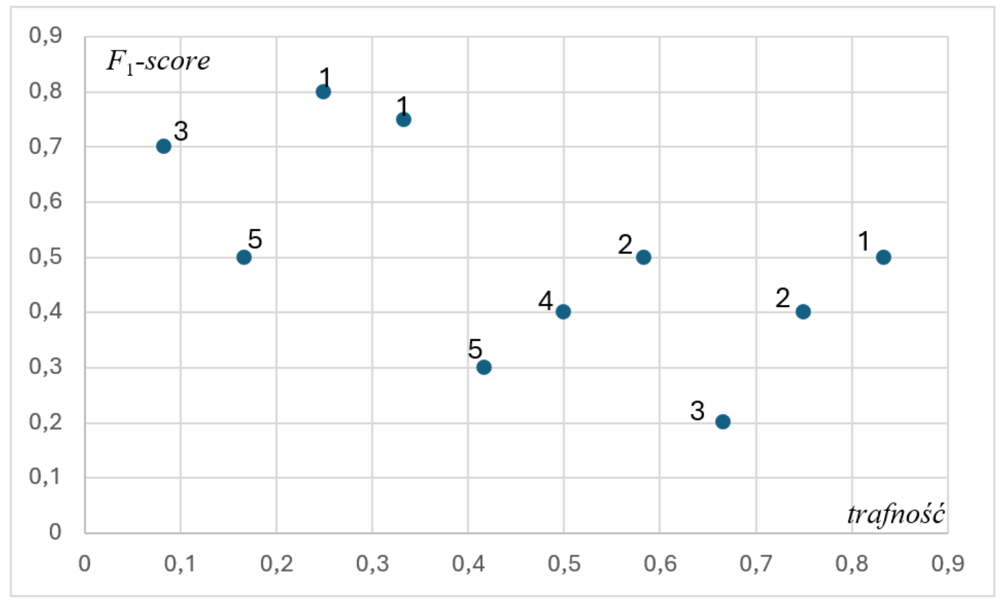
Niektóre klasyfikatory niezdominowane mogą być usytuowane w „zagęszczonych” regionach znormalizowanej przestrzeni ocen. Za pomocą geometrycznej miary zagęszczenia β (ang. geometric crowding distance) można preferować oceny leżące w mniej zagęszczonych obszarach. Niech wśród γ klasyfikatorów o tej samej randze, preferuje się model o największej wartości β, która jest średnią odległością Euklidesa w zbiorze ocen Y. Wartość funkcji β dla klasyfikatora nr k wyznaczamy, jak niżej:
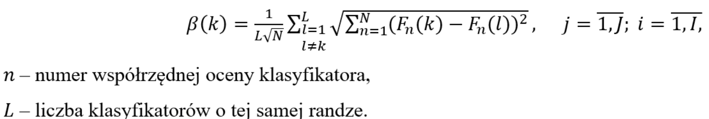
Po wyznaczeniu rang klasyfikatorów dopuszczalnych w populacji znana jest wartość rangi maksymalnej dla rozwiązań dopuszczalnych. Ponadto dla klasyfikatorów niedopuszczalnych wyznacza się kary oraz karę maksymalną w populacji. W algorytmie CENA wartość maksymalizowanej funkcji sprawności klasyfikatora M wyznacza się następująco:
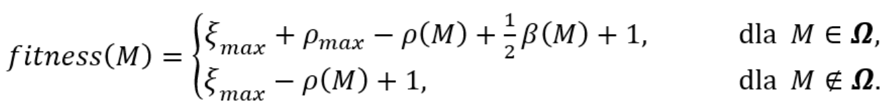
Na podstawie sprawności sieci można je uporządkować i zastosować strategię elitarystyczną, która zapobiega utracie efektywnych rozwiązań podczas wyznaczania nowej populacji. Procedura generowania nowych populacji powtarzana jest co najwyżej populationmax razy.
Opis mutacji
Mutacje w algorytmie CENA mogą zachodzić bezpośrednio po operacji krzyżowania albo bez uprzedniego zastosowania operatora krzyżowania. Z prawdopodobieństwem MutateRate podejmowana jest decyzja o zastosowaniu mutacji. Jeżeli taka decyzja zapadnie, wykonywany jest operator mutacji wybrany metodą ruletkową.
Zastosowane operatory mutacji można podzielić na dwie grupy: mutacje parametryczne, które modyfikują wartości już istniejących parametrów sieci oraz mutacje strukturalne, które zmieniają architekturę sieci neuronowej.
Do mutacji parametrycznych należą następujące operatory. Pierwszy typ mutacji polega na zmianie wagi wybranego połączenia synaptycznego. Do aktualnej wartości wagi dodawana jest wartość losowana z rozkładu jednostajnego na symetrycznym względem zera, konfigurowalnym przedziale. Dla przykładu, jeżeli wyjściowa wartość wagi wynosi , a maksymalny zakres mutacji jest równy , to po mutacji nowa wartość wagi może należeć do przedziału .
Drugi typ mutacji dotyczy parametru , występującego w funkcjach aktywacji zdefiniowanych wzorami (1)–( 2). W każdym neuronie warstwy ukrytej parametr ten może ulec zmianie, przy czym jego nowa wartość jest losowana z konfigurowalnego przedziału symetrycznego względem zera. Przykładowo, jeżeli , a przedział losowania ma postać , to po mutacji parametr ten może przyjąć dowolną wartość z tego przedziału.
Trzeci typ mutacji polega na zmianie rodzaju funkcji aktywacji w neuronie warstwy ukrytej. Nowy typ funkcji aktywacji wybierany jest metodą ruletkową, przy czym parametry tej ruletki dla każdej dopuszczalnej funkcji aktywacji są konfigurowalne. Zastosowane funkcje aktywacji opisane są wzorami (1)–(6). Dla przykładu, neuron wykorzystujący tangens hiperboliczny jako funkcję aktywacji może po mutacji uzyskać funkcję ReLU. W takim przypadku wartość parametru pozostaje bez zmiany.
Do mutacji strukturalnych należą natomiast operatory zmieniające topologię sieci. Pierwszy z nich polega na dodaniu nowej ukrytej warstwy neuronów. Proces ten został zobrazowany na rys. 2, Dla warstwy wejściowej jest nim , natomiast dla warstwy wyjściowej - . Jeżeli nowa warstwa jest dodawana pomiędzy warstwami o identyfikatorach oraz , to otrzymuje ona identyfikator o wartości (id1+id2)/2
Mutacja dodania warstwy polega na „przecięciu” wszystkich dotychczasowych połączeń pomiędzy dwiema warstwami i wstawieniu pomiędzy nie nowej warstwy neuronów. Jeżeli przed mutacją istniało połączenie synaptyczne o danej wadze, to po dodaniu nowej warstwy zostaje ono zastąpione przez dwa połączenia: pierwsze, prowadzące do nowego neuronu, o takiej samej wadze jak poprzednio, oraz drugie, wychodzące z nowego neuronu, o wadze 1. Wszystkie nowe neurony mają tę samą losowo wybraną funkcję aktywacji. Dodatkowo pomiędzy pierwszą chronologicznie z istniejących warstw a nowo dodaną warstwą może zostać dodana pewna liczba losowo dobranych krawędzi, oznaczonych na rys. 2 kolorem czerwonym. Przedział losowania tej liczby krawędzi jest konfigurowalny. Jeżeli w danym przebiegu algorytmu przewidziano etap douczania, osobnik, w którym dodano nową warstwę neuronową, podlega następnie operacji wstecznej propagacji błędu na zbiorze uczącym.
Drugi typ mutacji strukturalnej polega na usunięciu warstwy ukrytej. W takim przypadku usuwane są wszystkie neurony należące do tej warstwy oraz wszystkie krawędzie wchodzące do niej i wychodzące z niej. Następnie każdy neuron warstwy poprzedzającej usuwaną warstwę jest łączony z każdym neuronem warstwy następującej po niej krawędzią o losowej wadze. Przykładowo, jeżeli w warstwie poprzedniej znajdują się neurony oznaczone numerami 1 i 2, a w warstwie następnej neurony 3 i 4, to po wykonaniu mutacji powstaną połączenia: (1,3), (1,4), (2,3), (2,4).
Trzeci typ mutacji strukturalnej polega na dodaniu połączenia synaptycznego pomiędzy dwoma losowo wybranymi neuronami należącymi do kolejnych warstw. Waga nowo dodanego połączenia jest losowana z tego samego przedziału, co w przypadku mutacji zmieniającej wagę synaptyczną.
Czwarty typ mutacji strukturalnej polega na usunięciu losowego neuronu z warstwy ukrytej wraz ze wszystkimi połączeniami wchodzącymi do niego i wychodzącymi z niego.
Piąty typ mutacji strukturalnej polega na dodaniu nowego neuronu do warstwy ukrytej. Wygenerowany neuron zostaje połączony z jednym losowo wybranym neuronem warstwy poprzedniej oraz z jednym losowo wybranym neuronem warstwy następnej.
Szósty typ mutacji strukturalnej polega na usunięciu losowo wybranego połączenia synaptycznego, przy czym nie może ono być jedynym połączeniem synaptycznym wchodzącym do zadanego neuronu.
Opis krzyżowania
Podczas reprodukcji osobniki są najpierw dzielone na grupy o tych samych zbiorach identyfikatorów warstw neuronowych. Liczba potomków wyznaczanych przez daną grupę jest proporcjonalna do sumarycznej wartości funkcji przystosowania jej osobników odniesionej do średniej wartości funkcji przystosowania całej populacji. Jeden z rodziców wybierany jest spośród najlepszych osobników danej grupy. Drugiego rodzica losuje się z tej samej grupy. Natomiast z zadanym prawdopodobieństwem InterspeciesCrossoverRate dopuszcza się jego wybór spoza grupy.
Operacja krzyżowania wykonywana jest z prawdopodobieństwem CrossoverRate. W operacji krzyżowania wyróżnia się rodzica wiodącego, którym jest osobnik o większej wartości funkcji przystosowania, a w przypadku remisu - osobnik o mniejszej liczbie krawędzi synaptycznych. Połączenia synaptyczne obu rodziców są dopasowywane według ich identyfikatorów. Jeżeli połączenia mają takie same identyfikatory, to z prawdopodobieństwem MultipointCrossoverRate do nowej sieci neuronowej kopiowane jest losowo wybrane połączenie. W przeciwnym przypadku generowana jest krawędź o wadze równej średniej arytmetycznej wag obu dopasowanych połączeń rodzicielskich. Jeżeli natomiast dane połączenie występuje tylko u jednego z rodziców, to zostaje ono przepisane do osobnika potomnego wtedy, gdy pochodzi od rodzica wiodącego albo gdy obaj rodzice pochodzą z grup o różnych zbiorach identyfikatorów warstw.
Zbiór połączeń synaptycznych odziedziczonych przez potomka wyznacza następnie zbiór neuronów, które muszą zostać do niego skopiowane. Jeżeli neuron o danym identyfikatorze występuje u obu rodziców, to jego wersja wybierana jest losowo. Neurony wejściowe i wyjściowe są natomiast zawsze kopiowane od rodzica wiodącego.
Sposób kodowania sieci neuronowej oraz procedura krzyżowania omówiono w [150, 197]. Wprowadzonymi w rozprawie modyfikacjami był wybór pierwszego rodzica spośród najlepszych osobników w grupie. Ponadto wprowadzono podział sieci neuronowych na grupy według zbiorów identyfikatorów warstw neuronów.
Opis parametrów metody CENA
Parametry ogólne metody:
- PopulationSize – początkowy rozmiar populacji;
- RandomSeed – ziarno generatora liczb losowych wykorzystywanego w procesie neuro - ewolucyjnym;
- NumberOfGenerations – liczba populacji generowanych podczas pojedynczego uruchomienia algorytmu, z wyłączeniem populacji początkowej.
Parametry związane ze strukturą i umiejscowieniem plików z danymi:
- TrainDataPath – ścieżka względna do pliku zawierającego zbiór uczący; plik musi być zapisany w formacie CSV (ang. Comma-Separated Values);
- TestDataPath – ścieżka względna do pliku z zestawem danych testowych. Plik musi być w formacie CSV (ang. Comma Separated Value);
- Stimuli – numery kolumn w plikach danych odpowiadające danym wejściowym sieci neuronowych. Kolumny są numerowane od zera;
- Responses – numery kolumn w plikach danych zawierających wartości odpowiedzi wykorzystywane jako wartości oczekiwane na wyjściu sieci neuronowych. Kolumny są numerowane od zera.
Parametry związane z interpretacją wartości na wyjściu sieci neuronowej;
- Threshold – wartość progowa wykorzystywana do przypisania obserwacji do jednej z dwóch klas na podstawie wartości wyjściowej sieci neuronowej;
- AboveThresholdClass – klasa przypisywana obserwacji, jeżeli wartość wyjściowa sieci neuronowej jest większa lub równa od wartości parametru Threshold;
- BelowThresholdClass – klasa przypisywana obserwacji, jeżeli wartość wyjściowa sieci neuronowej jest mniejsza od wartości parametru Threshold;
- PositiveClass – klasa traktowana jako pozytywna podczas konstruowania macierzy pomyłek oraz obliczania opartych na niej metryk oceny klasyfikatora;
Parametry związane z architekturą sieci neuronowych generowanych w populacji początkowej:
- NumberOfInputNeurons – liczba neuronów wejściowych w sieciach neuronowych populacji początkowej. Liczba neuronów wejściowych nie zmienia się podczas działania algorytmu;
- NumberOfHiddenNeurons – liczba neuronów warstwy ukrytej sieci wygenerowanych w populacji początkowej. Sieci populacji początkowej mają jedną warstwę ukrytą;
- NumberOfOutputNeurons – liczba neuronów wyjściowych sieci wygenerowanych w populacji początkowej. Liczba ta nie zmienia się w czasie całego działania algorytmu.;
- OutputActivationFunction – rodzaj funkcji aktywacji stosowanej w neuronach wyjściowych generowanych sieci neuronowych: 0 – sigmoidalna ze znakiem, 1 – sigmoidalna bez znaku, 2 – tangens hiperboliczny, 4 – schodkowa ze znakiem, 5 – schodkowa bez znaku, 12 – ReLU. Wybrany rodzaj funkcji aktywacji pozostaje niezmienny przez cały czas działania algorytmu;
- HiddenActivationFunction – rodzaj funkcji aktywacji stosowanej początkowo w neuronach warstwy ukrytej sieci neuronowych tworzących populację początkową. W kolejnych populacjach rodzaj funkcji aktywacji neuronów ukrytych może ulegać zmianie w wyniku mutacji. W neuronach wejściowych zawsze stosowana jest funkcja liniowa (y=x);
- InitialWeightsRandomized – parametr określający sposób inicjalizacji wag połączeń synaptycznych w sieciach neuronowych populacji początkowej. Dla wartości true wagi są losowane z rozkładu jednostajnego na przedziale domkniętym [−MaxAbsoluteValueOfRandomWeights, MaxAbsoluteValueOfRandomWeights], natomiast dla wartości false wszystkim tym wagom przypisywana jest wartość 1,0;
- MaxAbsoluteValueOfRandomWeights – maksymalna dopuszczalna wartość bezwzględna losowanych wag połączeń synaptycznych w sieciach neuronowych populacji początkowej;
Parametry definiujące zastosowaną funkcję przystosowania:
- FitnessFunction – sposób wyznaczania przystosowania osobników. Możliwe wartości: FITNESS_AUC – ocena na podstawie AUC ROC, FITNESS_ACCURACY – ocena na podstawie trafności klasyfikacji, FITNESS_F1 – ocena na podstawie F1-Score, FITNESS_MULTICRITERIA – ocena wielokryterialna;
- Criteria1, Criteria2, Criteria3 – parametry określające kryteria cząstkowe uwzględniane w ocenie wielokryterialnej, gdy parametr FitnessFunction przyjmuje wartość FITNESS_MULTICRITERIA. W przypadku stosowania dwóch kryteriów określa się parametry Criteria1 i Criteria2, a parametr Criteria3 jest pomijany;
Parametry związane z krzyżowaniem:
- CrossoverRate – prawdopodobieństwo wykonania operacji krzyżowania dla wybranej pary rodziców;
- InterspeciesCrossoverRate – prawdopodobieństwo wyboru drugiego rodzica spoza grupy, do której należy pierwszy rodzic. Grupy tworzone są na podstawie jednakowych zbiorów identyfikatorów warstw neuronowych;
- MultipointCrossoverRate – prawdopodobieństwo, że dla pary połączeń synaptycznych rodziców o takich samych identyfikatorach do osobnika potomnego zostanie skopiowane losowo wybrane połączenie jednego z rodziców. W przeciwnym przypadku tworzone jest połączenie o wadze równej średniej arytmetycznej wag obu dopasowanych połączeń rodzicielskich;
Parametry związane z adaptacyjną modyfikacją krzyżowania:
- UseAdaptiveCrossover – wartość true włącza mechanizm adaptacyjnej modyfikacji współczynnika krzyżowania CrossoverRate; wartość false wyłącza ten mechanizm;
- CrossoverStep – wartość, o którą zmieniany jest współczynnik krzyżowania CrossoverRate podczas pojedynczego kroku jego adaptacyjnej modyfikacji;
- MinCrossoverRate – minimalna dopuszczalna wartość współczynnika krzyżowania CrossoverRate podczas działania mechanizmu jego adaptacyjnej modyfikacji;
- MaxCrossoverRate – maksymalna dopuszczalna wartość współczynnika krzyżowania CrossoverRate podczas działania mechanizmu jego adaptacyjnej modyfikacji;
Parametry związane z mutacją:
- MutateRate – prawdopodobieństwo zastosowania mutacji, niezależnie od tego, czy wcześniej wykonano operację krzyżowania. Jeżeli podjęta zostanie decyzja o wykonaniu mutacji, jej rodzaj jest wybierany metodą ruletkową na podstawie wag przypisanych poszczególnym operatorom mutacji;
- MutateActivationAProb – waga operatora mutacji parametru Amut funkcji aktywacji neuronów warstw ukrytych w selekcji ruletkowej operatora mutacji;
- MutateNeuronActivationTypeProb – waga operatora mutacji polegającej na zmianie rodzaju funkcji aktywacji neuronu warstwy ukrytej w selekcji ruletkowej operatora mutacji;
- ActivationFunction_SignedSigmoid_Prob – waga wyboru funkcji sigmoidalnej ze znakiem w selekcji ruletkowej nowego rodzaju funkcji aktywacji podczas mutacji zmieniającej funkcję aktywacji neuronu;
- ActivationFunction_UnsignedSigmoid_Prob – waga wyboru funkcji sigmoidalnej bez znaku w selekcji ruletkowej nowego rodzaju funkcji aktywacji podczas mutacji zmieniającej funkcję aktywacji neuronu;
- ActivationFunction_Tanh_Prob – waga wyboru funkcji tangensa hiperbolicznego w selekcji ruletkowej nowego rodzaju funkcji aktywacji podczas mutacji zmieniającej funkcję aktywacji neuronu;
- ActivationFunction_SignedStep_Prob – waga wyboru funkcji schodkowej ze znakiem w selekcji ruletkowej nowego rodzaju funkcji aktywacji podczas mutacji zmieniającej funkcję aktywacji neuronu;
- ActivationFunction_UnsignedStep_Prob – waga wyboru funkcji schodkowej bez znaku w selekcji ruletkowej nowego rodzaju funkcji aktywacji podczas mutacji zmieniającej funkcję aktywacji neuronu;
- ActivationFunction_Relu_Prob – waga wyboru funkcji ReLU w selekcji ruletkowej nowego rodzaju funkcji aktywacji podczas mutacji zmieniającej funkcję aktywacji neuronu;
- MutateAddLayerProb – waga operatora mutacji strukturalnej polegającej na dodaniu warstwy ukrytej sieci neuronowej w selekcji ruletkowej operatora mutacji;
- MutateAddLayer_MinAdditionalLinks – minimalna liczba dodatkowych połączeń synaptycznych, które mogą zostać dodane pomiędzy neuronami nowo dodanej warstwy a neuronami warstwy ją poprzedzającej podczas mutacji polegającej na dodaniu warstwy ukrytej;
- MutateAddLayer_MaxAdditionalLinks – maksymalna liczba dodatkowych połączeń synaptycznych, które mogą zostać dodane pomiędzy neuronami nowo dodanej warstwy a neuronami warstwy ją poprzedzającej podczas mutacji polegającej na dodaniu warstwy ukrytej;
- MutateRemoveLayerProb – waga operatora mutacji strukturalnej polegającej na usunięciu warstwy ukrytej sieci neuronowej wraz z jej neuronami i połączeniami synaptycznymi w selekcji ruletkowej operatora mutacji;
- MutateAddLinkBetweenLayersProb – waga operatora mutacji strukturalnej polegającej na dodaniu połączenia synaptycznego pomiędzy losowo wybranymi neuronami należącymi do kolejnych warstw sieci w selekcji ruletkowej operatora mutacji;
- MutateRemLinkProb – waga operatora mutacji strukturalnej polegającej na usunięciu losowo wybranego połączenia synaptycznego, o ile nie jest ono jedynym połączeniem wchodzącym do danego neuronu, w selekcji ruletkowej operatora mutacji;
- MutateAddNeuronInLayerProb – waga operatora mutacji strukturalnej polegającej na dodaniu neuronu do warstwy ukrytej w selekcji ruletkowej operatora mutacji; dodawany neuron jest łączony z jednym losowo wybranym neuronem warstwy poprzedniej oraz z jednym losowo wybranym neuronem warstwy następnej;
- MutateRemSimpleNeuronProb – waga operatora mutacji strukturalnej polegającej na usunięciu losowo wybranego neuronu z warstwy ukrytej wraz z jego połączeniami synaptycznymi w selekcji ruletkowej operatora mutacji;
- MaxLayersInNetwork – maksymalna dopuszczalna liczba warstw sieci neuronowej;
Parametry związane ze wsteczną propagacją błędu wykonywaną na całej populacji:
- UseFullBackpropagation – wartość true włącza uczenie metodą wstecznej propagacji błędu wszystkich sieci neuronowych należących do populacji z wykorzystaniem zbioru uczącego; wartość false wyłącza tę funkcję;
- FullBackpropagationEpoch – liczba wygenerowanych populacji, po której wykonywana jest wsteczna propagacja błędu na sieciach całej populacji (musi być spełniony warunek numer populacji mod FullBackpropagationEpoch jest równy 0);
- FullBackpropagationIter – liczba iteracji uczenia metodą wstecznej propagacji błędu wykonywanych dla każdej sieci neuronowej podczas uczenia całej populacji;
- InitialEpochsWithoutBackpropagation – liczba początkowych populacji, podczas których nie jest wykonywane uczenie sieci neuronowych metodą wstecznej propagacji błędu, zarówno dla całej populacji, jak i dla sieci poddanych mutacji polegającej na dodaniu lub usunięciu warstwy.
Parametry związane z uczeniem metodą wstecznej propagacji błędu sieci neuronowych poddanych mutacji strukturalnej polegającej na dodaniu lub usunięciu warstwy ukrytej:
- UseHeavilyMutatedBackpropagation – wartość true włącza uczenie metodą wstecznej propagacji błędu, z wykorzystaniem zbioru uczącego, sieci neuronowych poddanych mutacji strukturalnej polegającej na dodaniu lub usunięciu warstwy ukrytej. Wartość false wyłącza tę funkcję;
- HeavilyMutatedIter – liczba iteracji uczenia metodą wstecznej propagacji błędu wykonywanych dla każdej sieci neuronowej poddanej mutacji strukturalnej polegającej na dodaniu lub usunięciu warstwy ukrytej;